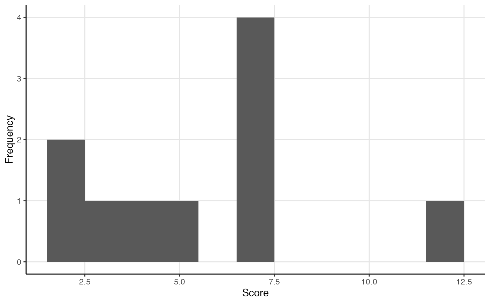
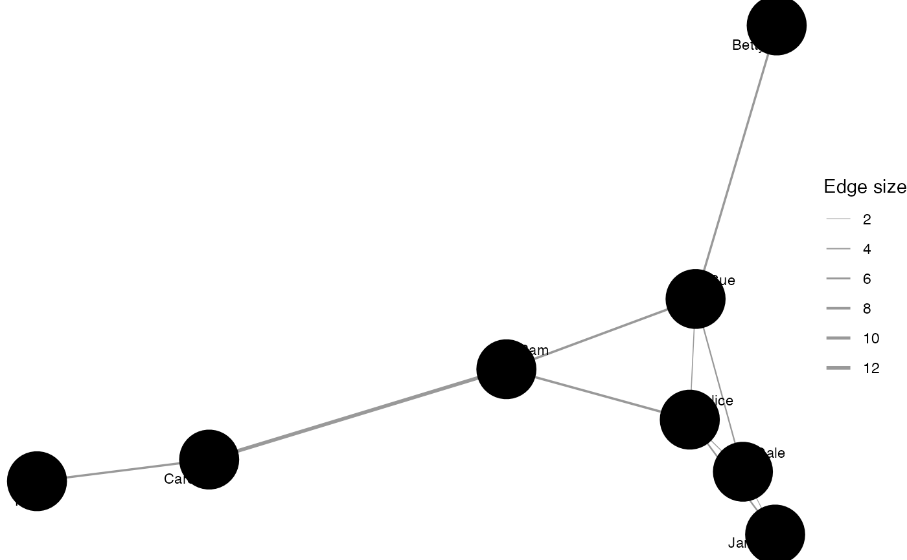

R/measure_centrality.R
between_centrality.RdThese functions calculate common betweenness-related centrality measures for one- and two-mode networks:
node_betweenness() measures the betweenness centralities of nodes in a network.
node_induced() measures the induced betweenness centralities of nodes in a network.
node_flow() measures the flow betweenness centralities of nodes in a network,
which uses an electrical current model for information spreading
in contrast to the shortest paths model used by normal betweenness centrality.
tie_betweenness() measures the number of shortest paths going through a tie.
net_betweenness() measures the betweenness centralization for a network.
All measures attempt to use as much information as they are offered,
including whether the networks are directed, weighted, or multimodal.
If this would produce unintended results,
first transform the salient properties using e.g. to_undirected() functions.
All centrality and centralization measures return normalized measures by default,
including for two-mode networks.
node_betweenness(.data, normalized = TRUE, cutoff = NULL)
node_induced(.data, normalized = TRUE, cutoff = NULL)
node_flow(.data, normalized = TRUE)
tie_betweenness(.data, normalized = TRUE)
net_betweenness(.data, normalized = TRUE, direction = c("all", "out", "in"))An object of a manynet-consistent class:
matrix (adjacency or incidence) from {base} R
edgelist, a data frame from {base} R or tibble from {tibble}
igraph, from the {igraph} package
network, from the {network} package
tbl_graph, from the {tidygraph} package
Logical scalar, whether the centrality scores are normalized. Different denominators are used depending on whether the object is one-mode or two-mode, the type of centrality, and other arguments.
The maximum path length to consider when calculating betweenness. If negative or NULL (the default), there's no limit to the path lengths considered.
Character string, “out” bases the measure on outgoing ties, “in” on incoming ties, and "all" on either/the sum of the two. For two-mode networks, "all" uses as numerator the sum of differences between the maximum centrality score for the mode against all other centrality scores in the network, whereas "in" uses as numerator the sum of differences between the maximum centrality score for the mode against only the centrality scores of the other nodes in that mode.
A numeric vector giving the betweenness centrality measure of each node.
Everett, Martin and Steve Borgatti. 2010. "Induced, endogenous and exogenous centrality" Social Networks, 32: 339-344. doi:10.1016/j.socnet.2010.06.004
Other centrality:
close_centrality,
degree_centrality,
eigenv_centrality
Other measures:
close_centrality,
degree_centrality,
eigenv_centrality,
measure_attributes,
measure_closure,
measure_cohesion,
measure_features,
measure_heterogeneity,
measure_hierarchy,
measure_holes,
measure_infection,
measure_net_diffusion,
measure_node_diffusion,
measure_periods,
measure_properties,
member_diffusion
node_betweenness(ison_southern_women)
#> Evelyn Laura Theresa Brenda Charlotte Frances Eleanor Pearl Ruth Verne Myra
#> 1 0.097 0.052 0.088 0.05 0.011 0.011 0.01 0.007 0.017 0.016 0.016
#> # ... with 7 more values from this nodeset unprinted. Use `print(..., n = Inf)` to print all values.
#> E1 E2 E3 E4 E5 E6 E7 E8 E9 E10 E11 E12 E13
#> 1 0.002 0.002 0.018 0.008 0.038 0.065 0.13 0.244 0.226 0.011 0.02 0.018 0.002
#> # ... with 1 more values from this nodeset unprinted. Use `print(..., n = Inf)` to print all values.
node_induced(ison_adolescents)
#> Betty Sue Alice Jane Dale Pam Carol Tina
#> 1 0.095 0.362 -0.505 0.029 -0.105 1.10 0.895 0.362
(tb <- tie_betweenness(ison_adolescents))
#> `Betty-Sue` `Sue-Alice` `Alice-Jane` `Sue-Dale` `Alice-Dale` `Jane-Dale`
#> 1 7 3 5 4.5 2.5 2
#> # ... with 4 more values from this nodeset unprinted. Use `print(..., n = Inf)` to print all values.
plot(tb)

ison_adolescents %>% mutate_ties(weight = tb) %>%
graphr()

net_betweenness(ison_southern_women, direction = "in")
#> Mode 1 Mode 2
#> 0.082 0.202